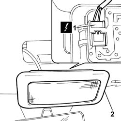

7040E10 front courtesy light - r+r
- Path
- Procedures > 70 FITTINGS > 7040 BODYSHELL INTERIOR TRIMS AND FITTINGS > 7040E interior courtesy light system > 7040E10 front courtesy light - r+r
- Kind
- repair procedure (removal / refitting; the operation number is the code)
- Applies to
- all engines; all production periods
- Interactive page
- https://sloeber94.github.io/elrnDB-fPnd/en/#/2753201
Applies to: all engines; all production periods
 Removing
Removing
 Refitting
RefittingDisconnect the battery negative terminal.
Release the courtesy light using a suitable tool.
1. Disconnect the electrical connection.
 | Name | Connector |
|---|---|---|
1 | Front courtesy light | G10 |
2. Remove the courtesy light.

Applies to: all engines; all production periods
Refitting
RemovingConnect the electrical connection.
| Name | Connector |
|---|---|---|
- | Front courtesy light | G10 |
Place the courtesy light in position and check that it is securely fitted.
Connect the battery negative terminal.
Topics that link to this page (15)
- I50 INTERIOR LIGHTS NOT WORKING / UNDER NO CIRCUMSTANCES
- I57 INTERIOR LIGHTS NOT WORKING WITH DOORS UNLOCKED BY REMOTE CONTROL
- I58 INTERIOR LIGHTS DO NOT GO OFF AT KEY-ON
- 5505A90 rear wiring bundle - r r or replace
- 5570T20 radio aerial amplifier - r r
- 5580C50 (HEAD- BAG MODULE ) (one), left or right - R.R.
- 7015A24 tailgate hinges - repair or replace with tailgate removed
- 7030B24 sliding roof blind,front or rear - r r
- 7030B47 GUIDE device for sliding roof movement control cables - R.R .
- 7030B50 sun roof guide , one , lh or rh - r r
- 7030B70 sun-roof control switch - r+r
- 7030B74 sun-roof wiring harness - r r or replace
- 7040E80 COURTESY LIGHT BULB - R.R.
- 7040H10 roof panel lining - r r
- 7040H16 roof panel lining - r r